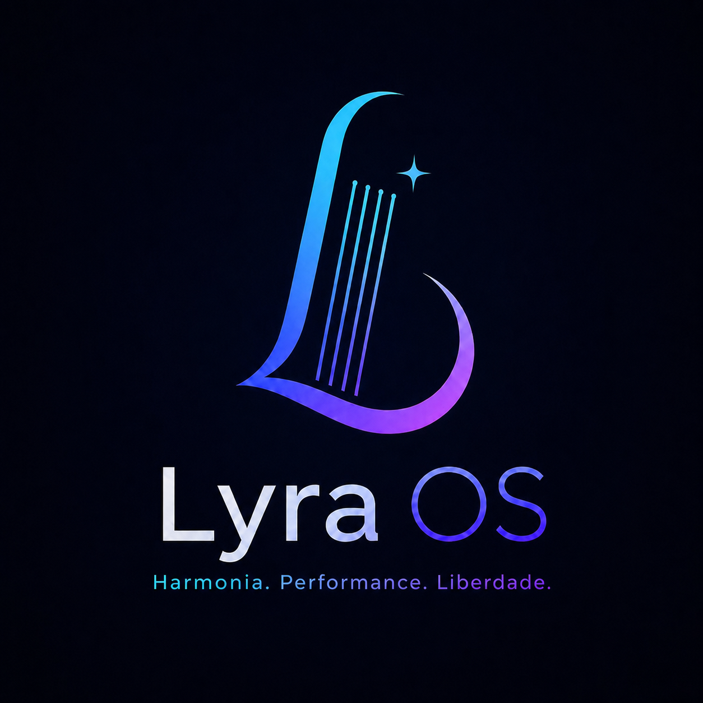
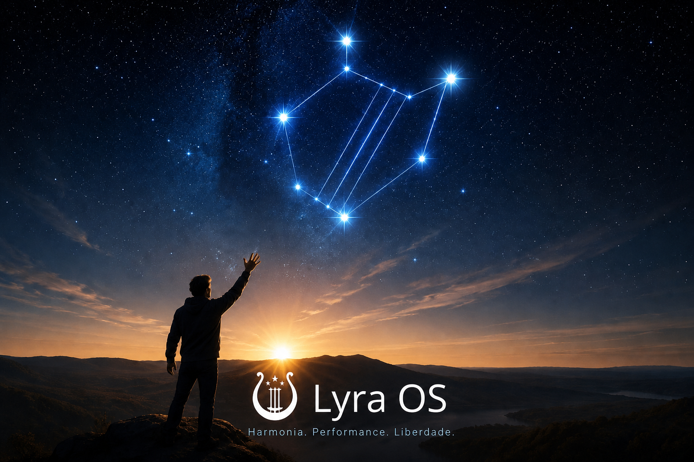

Instale o
Lyra OS.
Uma experiência desktop harmoniosa, segura e feita para acompanhar o seu ritmo.
Seguro por construção
Leve, familiar e elegante

Fale a sua
linguagem.
Escolha o idioma inicial do sistema. Você poderá mudar essa opção depois.
Seu lugar
no mundo.
A região define formatos de data, moeda, números e o fuso horário sugerido para o sistema.
Cada tecla
no lugar.
Escolha o layout físico do seu teclado. Você poderá adicionar outros layouts depois nas Configurações.
⌨ O layout recomendado para teclados físicos vendidos no Brasil é ABNT2.
Seu espaço.
Seu nome.
Crie a conta principal do Lyra OS. Ela terá acesso administrativo via sudo; root permanecerá bloqueado.
Onde o Lyra
vai viver?
Escolha o disco de destino. O layout padrão usa Btrfs, Snapper e zram para manter o sistema seguro e recuperável.
Detectando discos…
Pronto para
começar.
Revise suas escolhas. A instalação só ficará disponível quando o backend passar pelos testes de VM e Secure Boot.
